前言
之所以会有这篇文章，主要是因为Hexo自身的局限性。每次换一台新机子，都要重新安装Hexo的相关环境，烦得要死（虽然本身也不难吧）。而且Hexo本身似乎也不太支持直接Down现成项目用，每次都得init之类的流程重新跑一遍，烦死。
然后正好想起来云服务器好久没用了，同时最近jenkins玩的也比较多，就起了邪恶的念头，为何不用Jenkins直接集成Hexo的发布呢？
需要注意的是，本文所使用的Jenkins配置是基于windows的，其他的系统可能会有不同，当然这些不同诸位敢于使用其他系统的读者想必也是可以克服的。
同时，此文章假定读者已经使用Hexo+GithubPages搭建过Blog。因此这方面的事儿不会细说。相关教程可以查看这篇文章。但需要注意的是在新版的Hexo中，有些设置已经跟这个文章中写的不一样了，详细不同可查看后文新版Hexo安装Tips部分。
需要说明的是，这并不是一篇多么细致的教程文章，只是列出了大体步骤。
目标
每次只需要在本地Down一份文章列表，不需要安装Hexo，Nodejs等。而用户只需要直接写文章并提交到Github，文章就会自动发布到Blog上。
所需条件
- 云服务器一台（不需要太好，我用的腾讯云乞丐版windows服务器）
- 云服务器安装Jenkins
- 云服务器配置Hexo环境
- Git之类的玩意儿
集成步骤简要说明
将原有的GithubPages项目分一个分支出来，该分支单独存放文章目录（下文用source分支来代替该分支）。
云服务器上配置好hexo的发布环境，jenkins将通过githubHook来检测source分支的push行为，检测到后将触发构建。
构建的步骤为
- 拉取source分支
- 将source分支内的内容替换到Blog工程下的source文件夹内。
- 对Blog工程执行Hexo 发布流程（hexo g hexo d）
具体步骤
云服务器环境配置
需要在云服务器上做如下几件事情：
- 安装Jenkins
- 配置Hexo环境
- 安装Git
安装git
直接安就行了……只不过最好在安jenkins前安装，方便jenkins直接搜索git.exe（所以要记得在安的时候选中将git添加到系统环境变量）。记得在这步的时候配置对应github的ssh备用。
安装Jenkins
首先去jenkins官网下载对应操作系统的jenkins安装文件，直接安装。这里我安在C:\Jenkins\目录下了。
在安装后会在浏览器中弹出配置引导，没有的话可以试着访问localhost:8080。在配置引导中，除了简单的下一步外，有以下几点需要注意（不是按顺序排的，请读者自行对照）
- 需要输入一个初始密码，这个密码的位置在配置引导中有提示，找到文件用记事本打开就行（注意这个初始密码文件会在引导结束后消失……）。
- 设置网址时最好设置成127.0.0.1::8080而非他默认提供的localhost:8080.不这么设置似乎会有问题，看到别的博主说了一下。
- 安装插件时最好直接按新手入门推荐的配置安装。笔者曾因自定义安装而导致无法运行批处理文件，浪费了三天时间。
- 最好别跳过新建用户环节，否则后续要改admin密码或者输入初始密码，烦得很。
OK，Jenkins应该就安好了。拿着云服务器的外网地址:8080访问一下，看到了jenkins登陆界面。Success！
配置Hexo环境
介于看到这里的读者应该都配置过Hexo环境，这部分简单说一下（如果读者直接在云服务器上配置的Hexo环境，这段直接跳过）。
找个地方新建一个文件夹用来放Blog工程文件。然后在对应的文件夹下Hexo Init，之后直接把原有的Hexo工程拷贝过来即可。注意还有一些东西要安装，见后文新版Hexo安装Tips部分。
在这一步笔者意识到一件很有趣的事，那就是此时如果直接使用hexo s来启动服务器的话，你的Blog直接就在你的服务器上跑起来了。那只需要再简单的去买个域名，配置域名绑定到当前云服务器IP地址和端口就可以直接跳过GithubPages直接自己建Blog网站了。
博客工程配置
Hexo通过读取Source文件和网站配置将整个网站渲染成静态页面并放置到Public文件夹中。这一步对应着hexo g生成操作。
而在hexo d中，如果在hexo的config文件中配置的发布方式为github。那此时hexo会建立一个git项目目录然后把对应的git项目clone下来。下一步就是把生成的Public文件夹里的内容替换进git项目目录中，然后提交所有改动。
同时需要知道，GithubPages上面放的其实就是纯粹的静态页面。所以一般如果直接Clone博客工程下来，是不包含外部那些hexo发布用的资源的。
因此需要先把项目工程中的Source文件拷出来，然后切目录到.delopy_git中去创建一个新的分支(source)来专门存放原始的文章资源，或者直接在github上进行分支创建操作。
于是此时项目是处于source分支上，将整个目录清空，然后拷入提前备份的source文件夹，提交并推送。
在博客配置这里有一些需要注意的地方。首先注意yml配置文件中，所有的Key后面的某号后面都应该跟一个空格。
其次还有一个坑点。笔者最开始配置的发布方式如下1
2
3
4deploy:
type: git
repo: https://xxxxx.github.io
branch: master
因为笔者最开始是使用的https形式+输入用户名密码的方式进行发布，在cmd窗口中使用hexo d的方式去发布没遇到什么问题，但是后来在jenkins中使用同样的方式发布时会报错，参考了一些资料后改成了:
1 | deploy: |
也就是ssh的发布形式，成功运行。具体原因尚未明确。但因此就需要在本地设置对应的SSH证书（见下文）
github设置
需要做如下几件事儿
- 配置githubWebhook
- 配置github personal access tokens
需要注意的是，在安装git的时候，github对应的ssh应该已经配置好了，没配置好的这时还需要去配置github ssh。
配置githubWebhook
githubWebhook的作用主要是当有push或者pullrequest发送到github上的库时，github会向固定的网址发送一条请求来通知对方服务器push/pullrequest行为的发生。
该功能其实是和jenkins的github Plugin配合实现的。这里先提前配置github端的配置。
进入到需要配置Webhook的仓库，依次点击setting(仓库右上)->webhooks(左侧导航栏)->add webhook(页面右上)
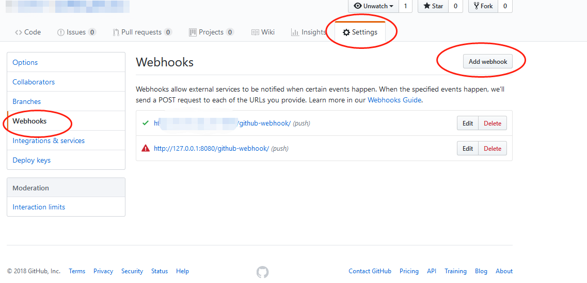
然后就会进入如下图所示的github-webhook配置页面
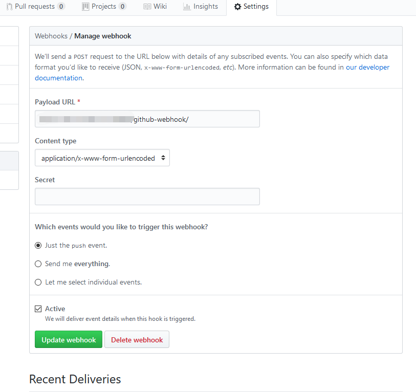
其中，Payload url就是当相关事件发生时，github会发送请求的网址。由于需要和jenkins进行配合，因此需要填jenkins的webhook地址。当在后文jenkins配置完成后，jenkins中github plugin默认的通知网址为：jenkins外网地址（见jenkins配置）+/github-webhook/。比如jenkins对外访问使用的是192.168.0.1:8080这个地址，那这里填写应该是:http://192.168.0.1:8080/github-webhook
配置github Personal access tokens
为了让jenkins能够登陆并访问github上的相关信息，需要配置github personal access tokens。同样，先配置github端。
进入github，右上角用户头像->settings->左侧导航栏DeveloperSettings，点进去后左侧导航栏Personal access tokens。
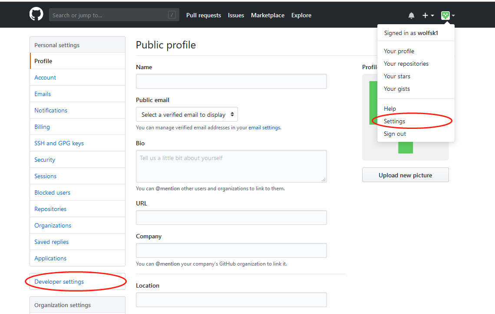
在Personal access tokens页面点击右上角Genrate new token会转到创建token的页面。给token起个自己看的名字，然后底下权限部分选中repo和admin:repo_hook组。。然后拉到最底下点击生成按钮。
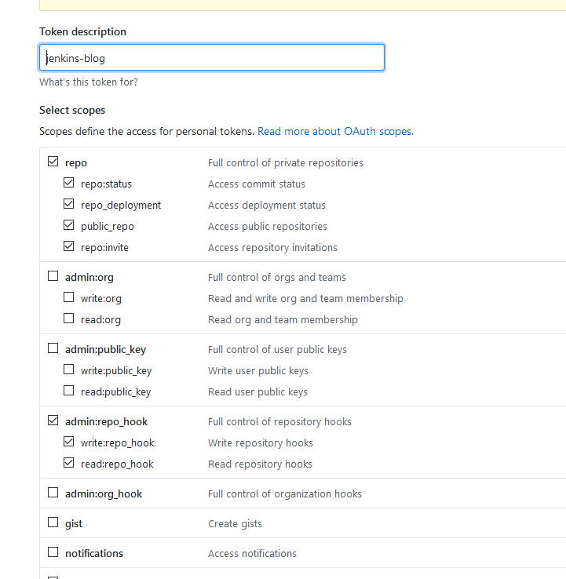
然后如下图显示，会跳转到Personal access tokens页面，同时显示一行字符串，请妥善保管此字符串。因为后续再也没有办法看到这个token对应的这个串了。
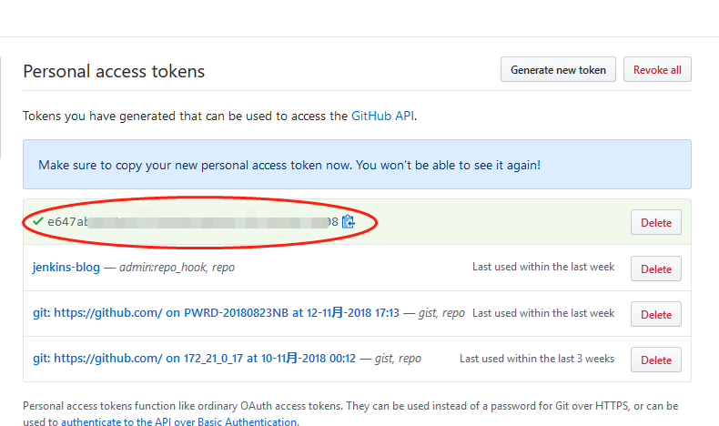
至此，github设置完毕。
Jenkins配置
jenkins是此篇文章中非常重要的环节。需要进行如下几个步骤的配置
- 配置githubserver
- 建立并配置项目
配置githubserver
注意，这个配置项是建立在jenkins安装了github plugin的情况下出现的。如果没正常出现，可能和此插件安装状态有关。
在jenkins首页左侧点击系统管理
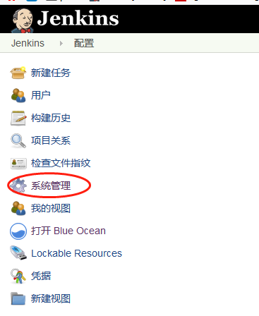
点击系统设置
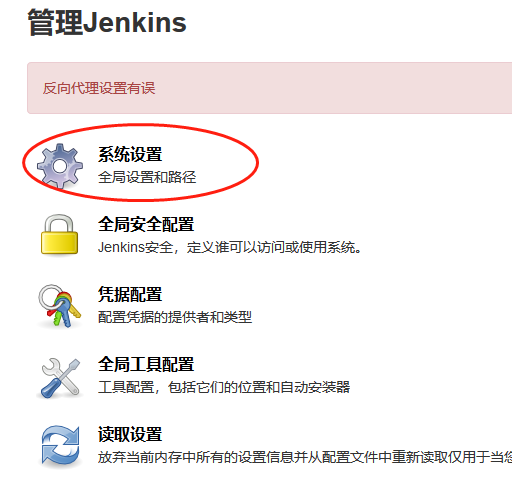
找到github相关设置，点击add server
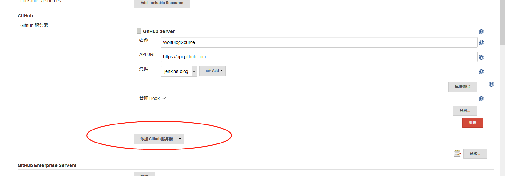
名称随便写，APIURL不需要改动，在底下凭据那里，点击Add
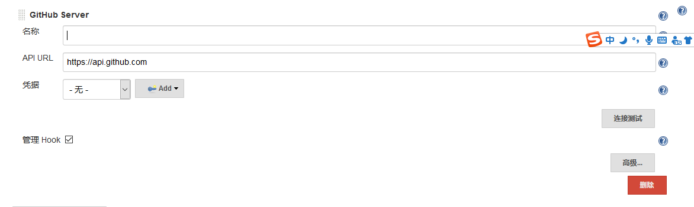
类型选择Sercet Key，ID和描述都是描述信息，关键的是SercertKey，填入github配置中的Personal access tokens
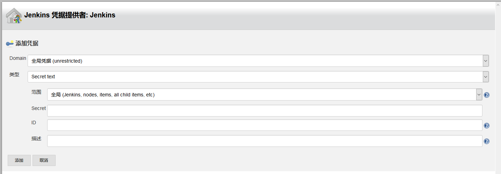
确定后，在凭据部分选中刚刚创建的token，拉到页面最底下，点击保存。
配置项目
点击左侧新建任务
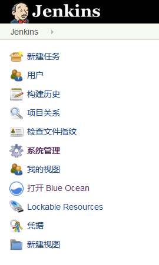
选择构建一个自由风格的软件项目，输入项目名称，点击保存。
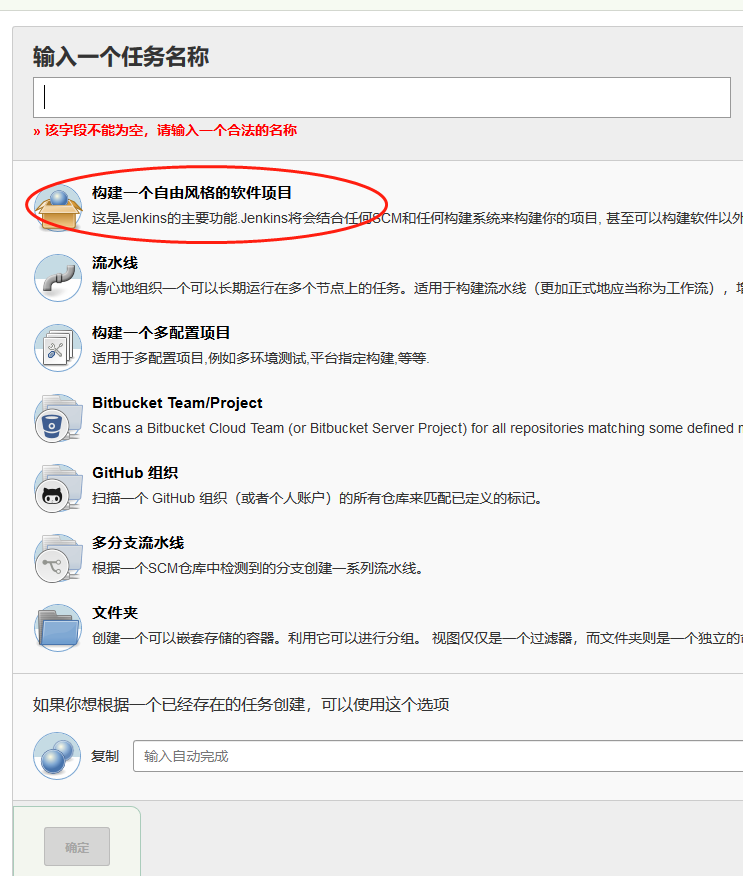
此时应处于jenkins首页，点击刚建立的任务。
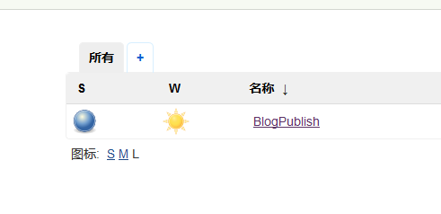
选择左侧导航栏的配置选项
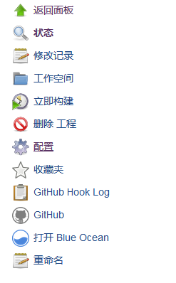
第一部分，勾选Github项目，填入githubpages对应的项目目录，地址形式为https://github.com/xxxx/xxxx.github.io.git/
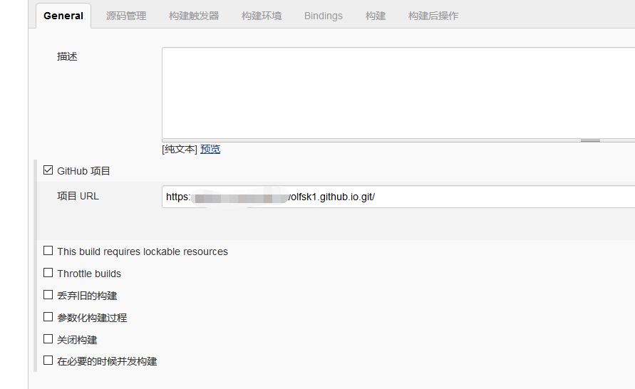
第二部分，源码管理，选择git，Repositories部分填入githubpages对应的项目的SSH路径，形式如：**git@github.com:xxxx/xxxx.github.io.git。底下Branch to build 填写为*/source**。也就是事先建好的源文件分支。
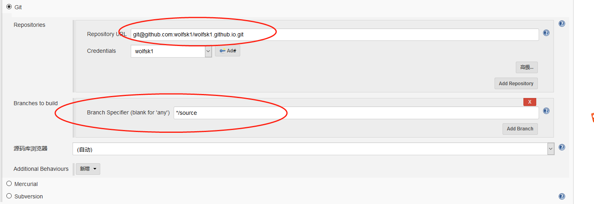
回到 Repositories部分，凭据右边点击Add，在弹出来的窗口中类型选中SSH User的那项，填写username。private key部分选中Enter directly，然后填写事先配置好的本机git的SSH私钥，也就是不带pub前缀的那个ssh文件里面的内容，全部复制粘贴过来。
然后第三部分，构建触发器，选中GitHub hook trigger for GITScm polling，这会使得当jenkins收到上一步配置的那个仓库对应的分支的webhook事件时开始构建。
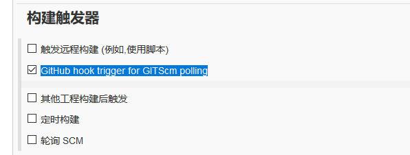
构建环境部分略过，直接跳到构建部分。点击增加构建步骤弹出如下窗口。选中执行windows批处理命令。
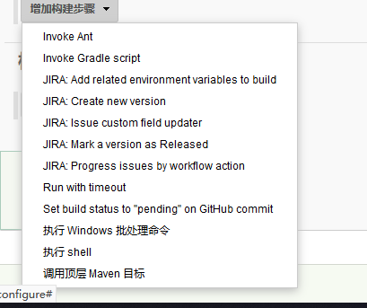
然后会弹出下图。
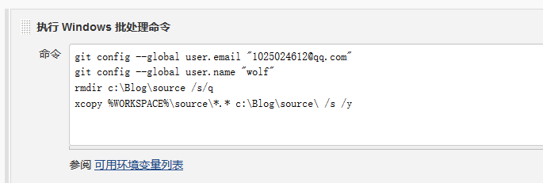
在空白区域填入如下代码。1
2
3
4git config --global user.email "xxxx@xxx.com"
git config --global user.name "xxxx"
rmdir c:\Blog\source /s/q
xcopy %WORKSPACE%\source\*.* c:\Blog\source\ /s /y
其中头两条代码是设置了git的用户邮箱和用户名。由于不知道jenkins使用的是机器中哪个git（似乎是个独立环境），一开始时总是弹出要求设置git的用户信息，所以加入了这两行代码。
第三四行是将一开始配置好的Blog项目中的source删掉并将jenkins获取到的source复制过去。之所以删掉而不用覆盖是考虑到可能会有删除某些文章的需求，因此最好完全按照github上source分支的状态更过去。涉及到的参数相关解释如下：
- rmdir 删除命令，主要指删除某个目录
- /s 同时删除子目录及子目录下的文件
- /q 静默模式，不会询问是否确认
- xcopy copy命令的扩展
- /s 针对子目录及子目录下的文件进行操作
- /y 不会询问是否覆盖
- %WORKSPACE% 使用jenkins中的WORKSPACE环境变量。也就是对应jenkins项目的工作目录。
至此，source文件已被更新，下一步是进行hexo的生成及上传。理论上在windows批处理中也可以执行，但是这里笔者始终没有成功，怀疑跟cmd环境下hexo的配置有关。因此下一步在shell环境下进行。
点击增加构建步骤，选中执行shell。填入代码1
2cd /c/Blog
hexo d -g
第一行命令将工作环境挪到Blog工程项目上。第二行直接调用hexo d -g，等同于先hexo g，再hexo d。
点击保存，至此，jenkins配置完毕。下面开始测试。
测试阶段
测试步骤
- 从GitHub上clone一份Blog项目Source分支下来（或者使用jenkins中的工程目录），添加一篇新的测试用文章，提交并推送。
- 删除测试用文章，提交并推送。
GitHubWebhook部分
若在推送完若干秒后，对应的jenkins项目开始构建，则GitHubWebhook测试通过。也可在GitHub上Blog项目的setting/webhooks中查看之前配置的Webhook状态。有对勾说明事件发送成功。
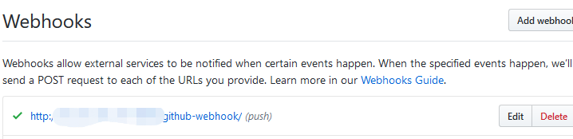
jenkins源码管理部分
在项目左下角构建历史中，点击最新构建记录右侧的小三角，选择控制台输出，进入日志界面。
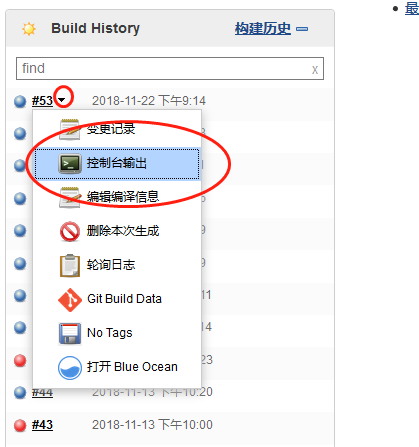
阅读日志查看有无报错，或者在构建完毕后查看工作区中的文件是否拉取到最新版本。
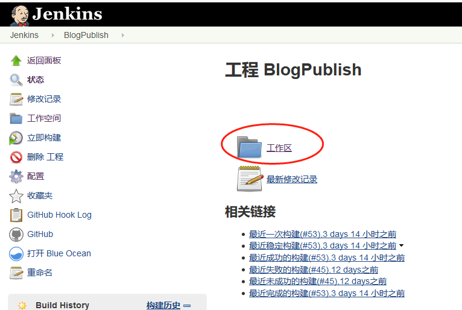
jenkins构建步骤-windows批处理部分
查看Blog工程中source文件夹内有无对应最新变动。有则说明测试通过。
jenkins构建步骤-shell部分
查看控制台日志输出有无hexo d -g命令相关及报错。
整体测试部分
测试步骤1走完后，等待若干时间后通过网址访问Blog，查看最新的测试文章是否正常添加。
测试步骤2走完后，等待若干时间后通过网址访问Blog，查看最新的测试文章是否正常删除。
Debug及可能会出现的问题
可通过控制台日志去确定本次构建出现的问题点。
最有可能遇到的问题是在windows下的jenkins里shell无法执行。一般是因为找不到shell的运行环境。通常jenkins会自己寻找sh程序，但有时会失效。此时应该在jenkins系统设置里找到shell配置的项。将值填写为git中的sh.exe（或其他已建立好的shell环境）
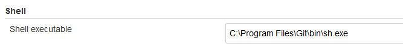
新版Hexo安装Tips
在Hexo3.0之后，服务器变成了独立的模块不会默认提供。因此想在本地跑hexoServer的话，需要执行以下语句来安装hexo-server模块
npm install hexo-server –save
结语
用这套系统某种意义上有一些杀鸡用牛刀，但是程序员最关键的就是折腾。折腾才是第一生产力啊。